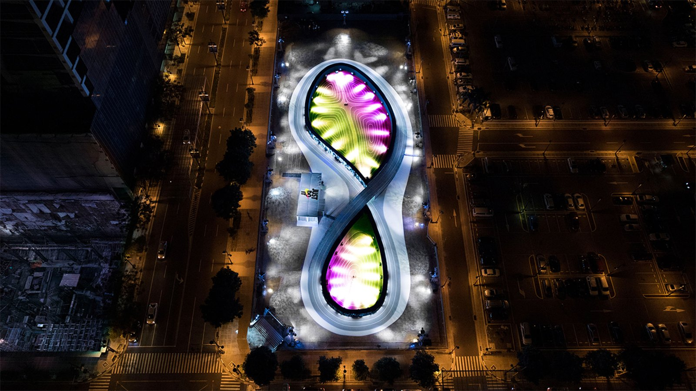
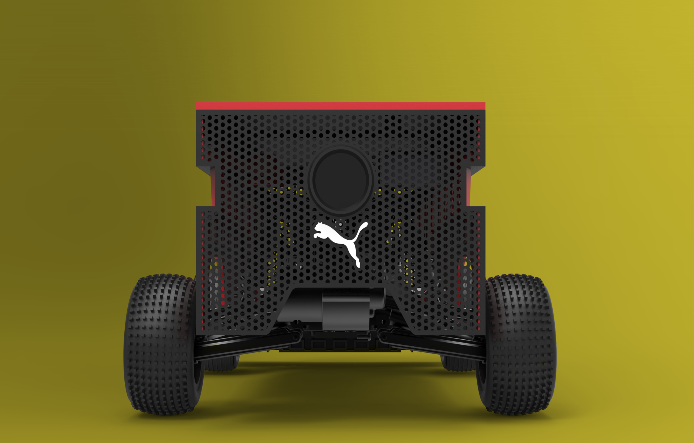
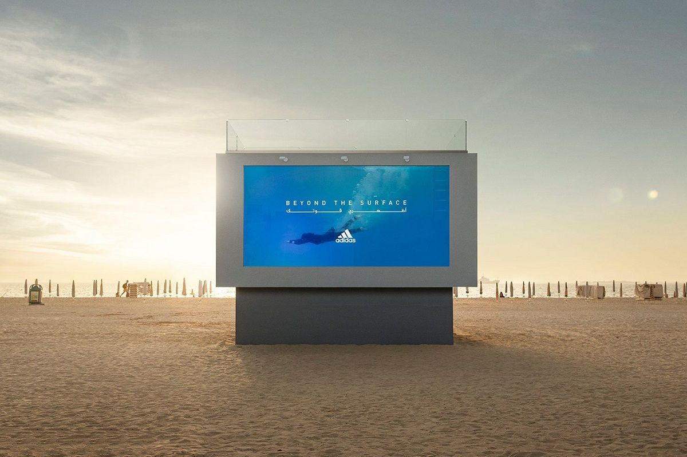
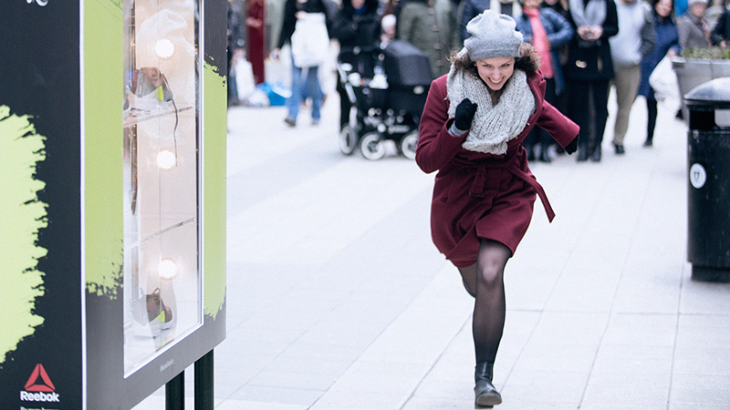
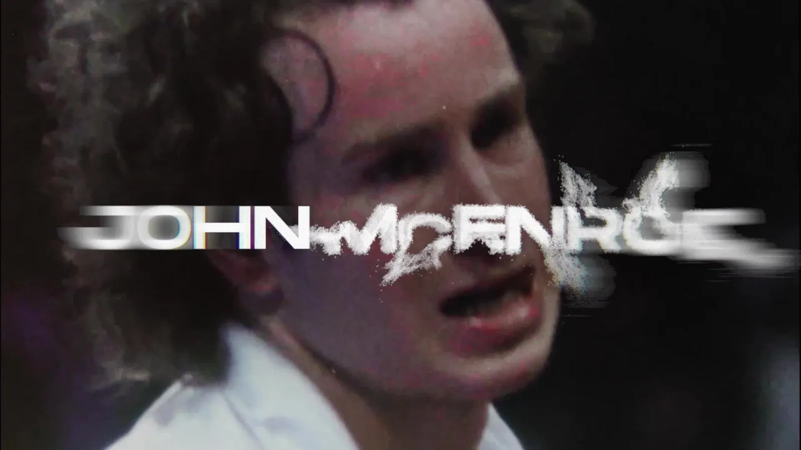
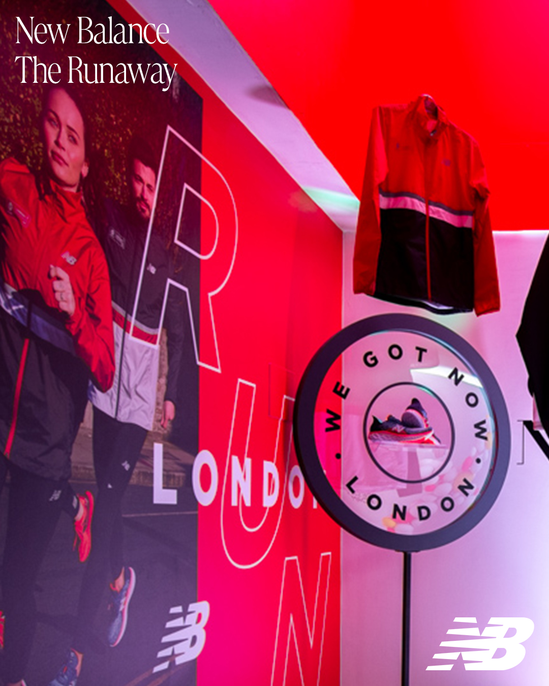
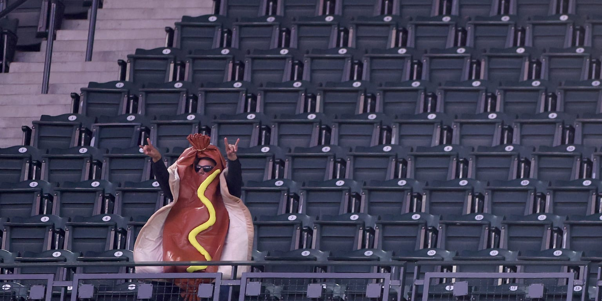
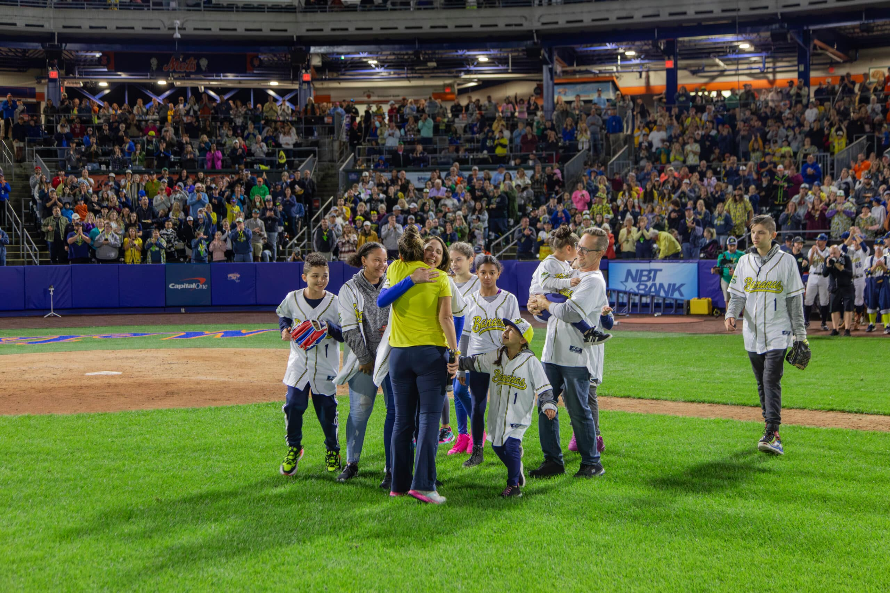
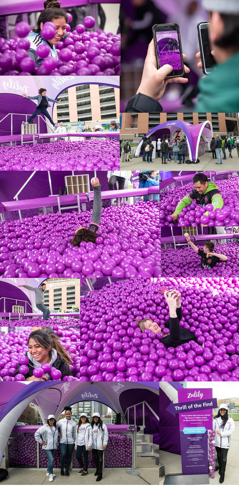

VISUAL CASE LIBRARY
眼前一亮的日常体育营销
11 个案例 · 进入深度文章 →

DAILY CASE 001 · 棒球 / MLB
QuikTrip × 圣路易斯红雀：巨型热狗全场接力
让观众把巨型充气热狗和面包在人群上方接力传递；两者会合，全场获得免费热狗。
MLB 官方素材已核美国 · 圣路易斯场内体验设计 / 集体任务 / 全场奖励

DAILY CASE 002 · 跑步 / 品牌体验
Nike Unlimited Stadium：在一条跑道上追赶自己的光影
把 200 米跑道做成鞋底轮廓，用环形 LED 生成跑者光影，让人每圈都追赶上一圈的自己。
奖项原档素材已核菲律宾 · 马尼拉沉浸空间 / 实时数据 / 自我竞速

DAILY CASE 003 · 田径 / 跑步训练
PUMA BeatBot：把世界纪录配速变成会跑的对手
让一台沿跑道飞驰的机器人精确复现目标配速，运动员不再追秒表，而是追一个真实移动的对手。
制作方素材已核全球 / 训练场景机器人 / 可视化配速 / 训练工具

DAILY CASE 004 · 游泳 / 女性运动
adidas Liquid Billboard：一块真的可以游进去的广告牌
把透明户外广告牌做成可下水的泳池，让普通女性进入画面，成为品牌主视觉本身。
制作方素材已核阿联酋 · 迪拜可进入广告牌 / 女性参与 / 城市直播

DAILY CASE 005 · 跑步 / 街头挑战
Reebok「Are You Fast Enough?」：跑得够快，广告牌直接送鞋
路人从广告牌前冲过，速度超过 17 km/h，陈列柜就解锁并送出一双跑鞋。
执行素材已核瑞典 · 斯德哥尔摩测速广告牌 / 即时奖励 / 街头试炼
DAILY CASE 006 · 跑步 / 零售体验
Nike Reactland：穿上新鞋，立刻跑进自己的游戏世界
消费者穿着 Epic React 在跑步机上奔跑，自己的头像同步变成游戏角色，闯过一段横版世界。
制作方素材已核中国体感游戏 / 跑步机试鞋 / 个性化视频

DAILY CASE 007 · 网球 / 品牌内容
Michelob ULTRA「McEnroe vs McEnroe」：让球员与年轻的自己打一场球
真实的约翰·麦肯罗隔网迎战五个年轻时期的数字化自己，让“如果能和过去对打”成为一场可直播的比赛。
制作方素材已核美国 / 全球播出数字人 / 实时对打 / 体育娱乐节目

DAILY CASE 008 · 跑步 / 马拉松社区
New Balance「The Runaway Pub」：跑步里程才是酒钱
开一家不收现金的跑者酒吧：训练里程自动变成酒水额度，跑得越多，赛前越有资格举杯。
代理商素材已核英国 · 伦敦跑步积分 / 线下酒吧 / 社群运营

DAILY CASE 009 · 棒球 / MLB
Seattle Mariners「Hot Dogs from Heaven」：热狗从天而降
工作人员从上层看台抛下绑着降落伞的热狗，让 90 秒食品派送变成全场抬头欢呼的固定节目。
球队官方素材已核美国 · 西雅图降落伞投放 / 场内奇观 / 可持续球队 IP

DAILY CASE 010 · 棒球 / 球队运营
Savannah Bananas：把一场棒球赛改造成两小时综艺秀
球员跳舞、踩高跷、做特技，同时用更快的 Banana Ball 规则压缩比赛，把球队做成一档现场娱乐节目。
球队官方素材已核美国 · 巡回赛改造比赛规则 / 现场表演 / 球队内容 IP

DAILY CASE 011 · 足球 / 比赛日体验
Zulily「Thrill of the Find」：在 3 万颗紫球里找 100 颗白球
搭一座 12 英尺见方的紫色球池，参与者在 2 分钟内寻找 100 颗白球；品牌定位被变成身体寻宝。
项目存档素材已核美国 · 西雅图巨型球池 / 限时寻宝 / 可分享影像